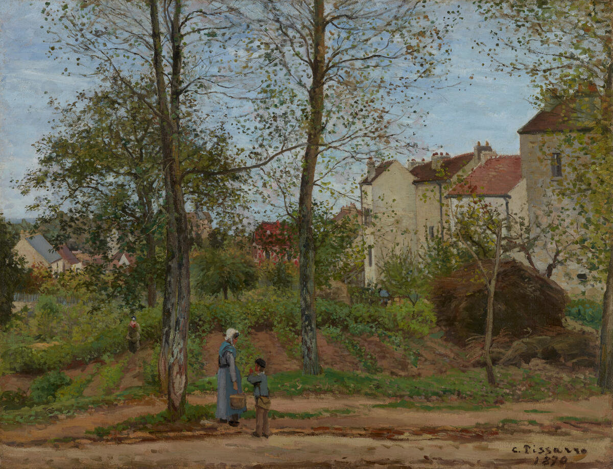
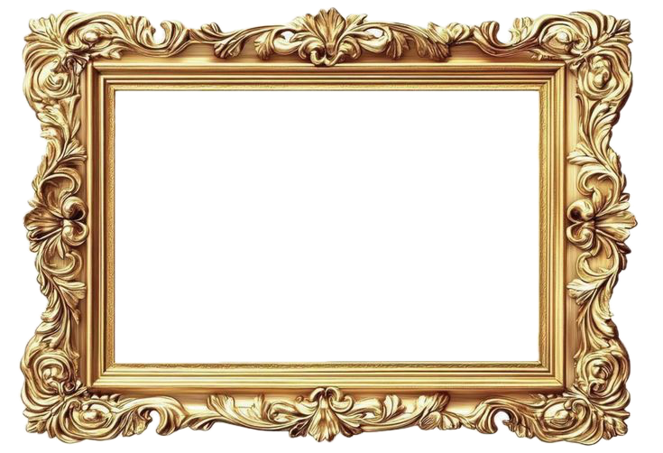
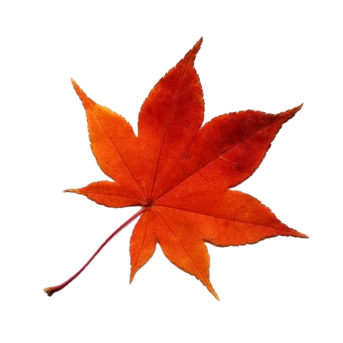
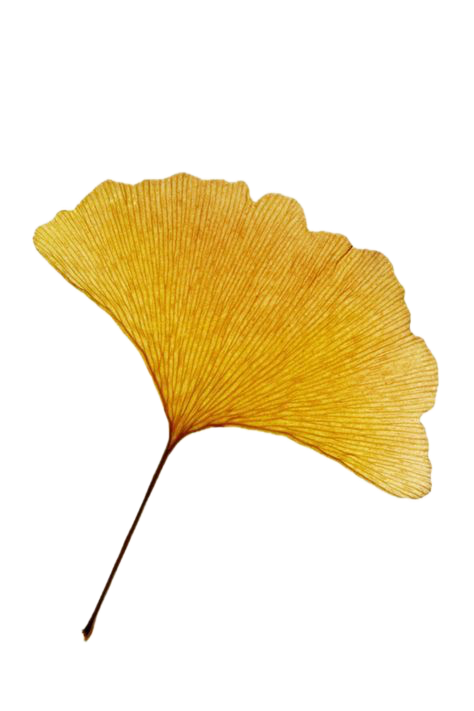
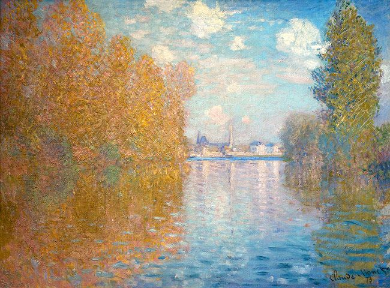
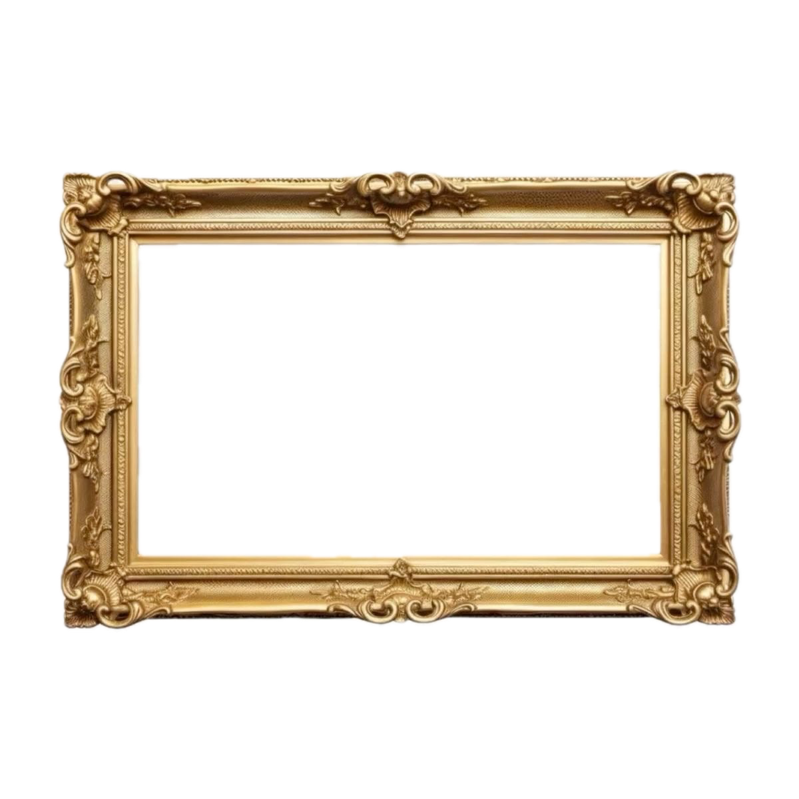
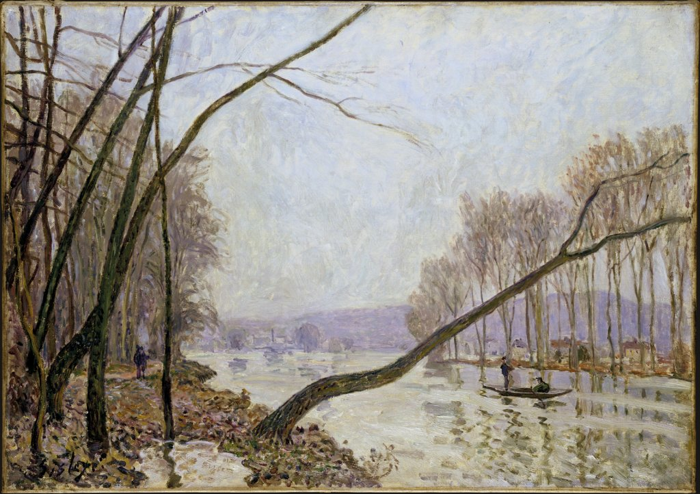
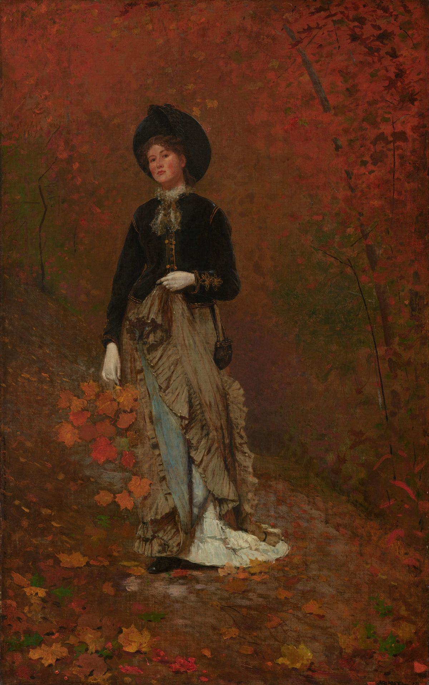
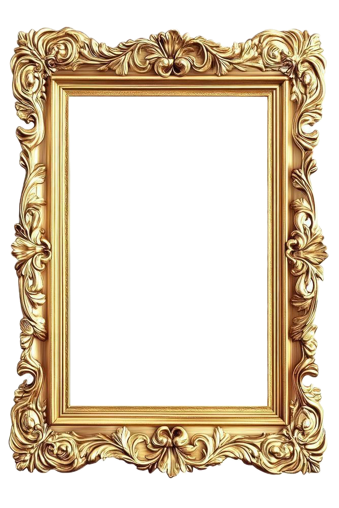
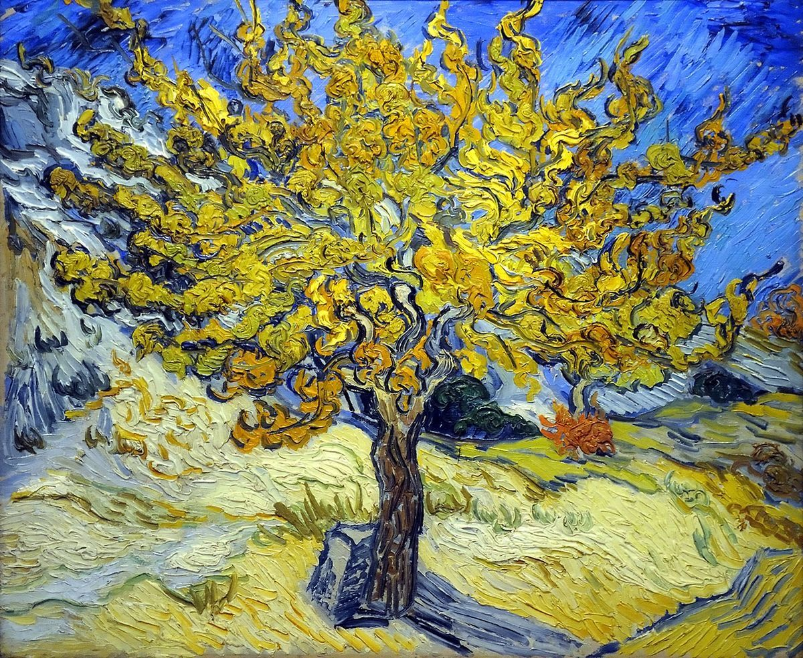

Landscape at Louveciennes
Camille Pissarro 1870
A quiet autumn landcape, with bare tress, soft colors, and everyday life in a French village.




Camille Pissarro 1870
A quiet autumn landcape, with bare tress, soft colors, and everyday life in a French village.


Claude Monet 1873
Golden autumn trees reflect on the river, capturing the changing light of the season.

Alfred Sisley 1876
Muted colors and delicate brushstrokes express the peaceful atmosphere of an autumn riverbank.


Winslow Homer 1877
A figure surrounded by fallen leaves suggests the quiet and reflective mood of autumn.

Vincent van Gogh 1889
Bright yellow leaves and expressive brushstrokes reveal the energy and movement of autumn.